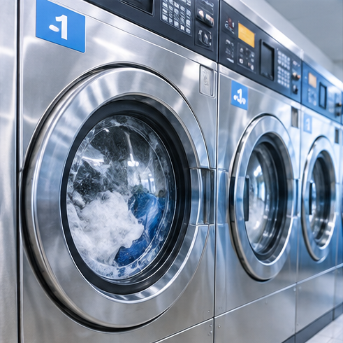
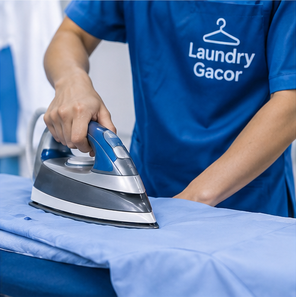
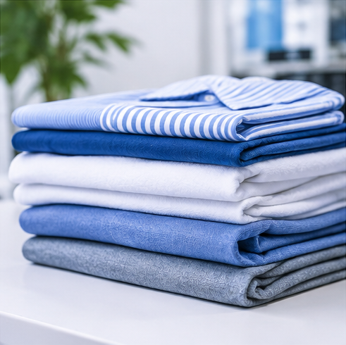
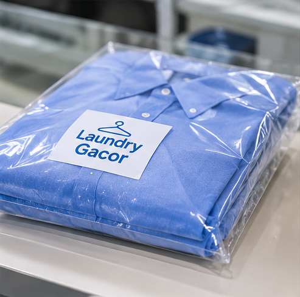
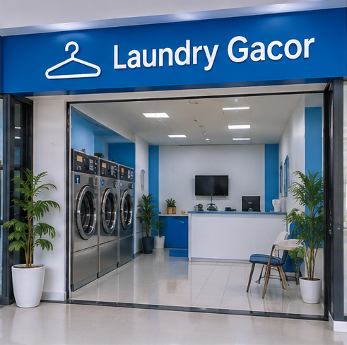

Galeri Laundry Gacor
Melihat lebih dekat proses dan pelayanan kami.
Dokumentasi Kami
Berbagai kegiatan dan layanan yang tersedia di Laundry Gacor.

Proses Pencucian
Pakaian dicuci menggunakan peralatan modern.
Pengeringan Pakaian
Proses pengeringan untuk menjaga kualitas pakaian.

Penyetrikaan
Pakaian dirapikan agar siap digunakan.

Pelipatan Pakaian
Pakaian dilipat dengan rapi sebelum dikemas.

Pengemasan
Pakaian dikemas dengan bersih dan rapi.

Tempat Laundry
Tempat pelayanan pelanggan Laundry Gacor.